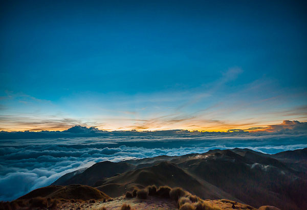
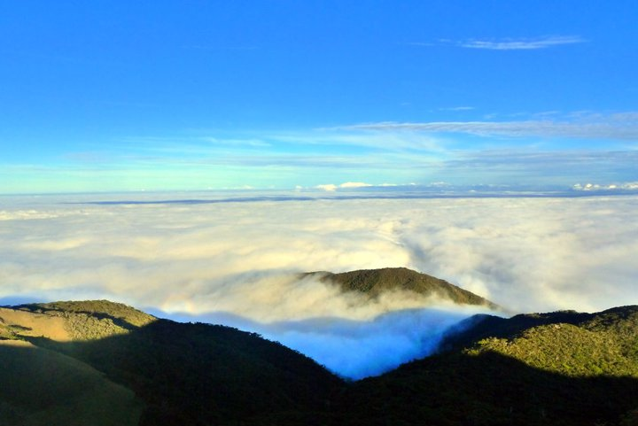
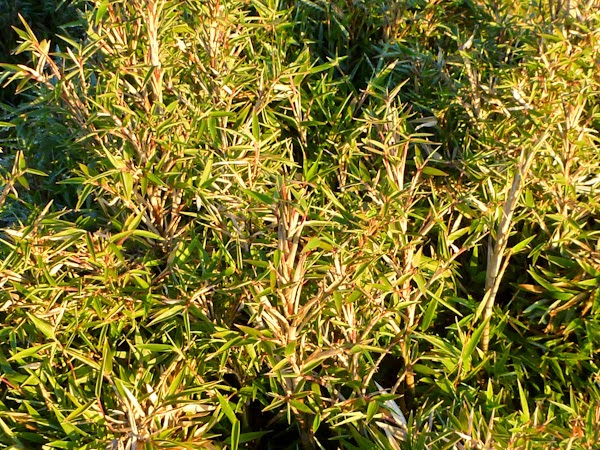

The prodigious and most splendid natural treasure of the Philippines is one of the archipelago’s classical icons, when it comes to those mesmerizing tourist attractions, which magnificently embedded the unparalled wisdom and power of our creator. They are truly amazing and yet incomprehensible to the naked eye. Mount Pulag is one of the most incredible tourist attractions which has engrossingly captivated millions because of its striking and awesome features that are genuinely incomparable from its external facade.
To begin with, Mount Pulag is deservingly adjudged in the colorful pages of ancient cultural history of the Philippines as “its third largest peak.” The marvelous and colossal Mount Pulag which is otherwise known as Mount Pulog is Luzon’s highest summit with a gyrating height of 2,922 meters above sea level. Did you know that the gripping borders between these tranquil provinces which are located in the northernmost section of the Philippines are all beautifully converged at the mountain’s peak? These must-see provinces are as follows: Ifugao, Nueva Viscaya and Benguet.
Due to its highest elevation, Mount Pulag has a temperate climate although this cool and invigorating place has been constantly visited by heavy rainfall for about a year. Did you know that its rainfall amount averages from 4,489mm? Likewise, its wettest season in a given year is every August. There has not been any single snow which had settled on its peak in the past 200 years. It has a total of 528 plant species which are all accurately documented for the sake of reference when it comes to its significant and comprehensive study in the near future. The extraordinary exuberance of Mount Pulog was blissfully christened as the one and only natural habitat of the endemic Dwarf Bamboo and the humble pride of Benguet which is overwhelmingly known as Pinus Insularis. The said specie had universally dominated the tropical areas of the Philippines’ biggest archipelago.
Its inexplicable mountainside is mainly comprised of a native wildlife that very well includes those 33 birds that are continuously generating their rare breed without any inch of difficulty at all. Mount Pulag has become the sacred haven and sanctity of many endangered species such as the Pilandok or the Philippine Deer, Giant Bushy-Tailed Cloud Rat and a bat which is fondly referred to as the Long-Haired Fruit Bat. The rich and enormously expressive Mount Pulag is the only mountain in the Philippines which safely cradles with immeasurable love and care an unusual creature that is commonly called as the Four -Cloud Rat Specie.